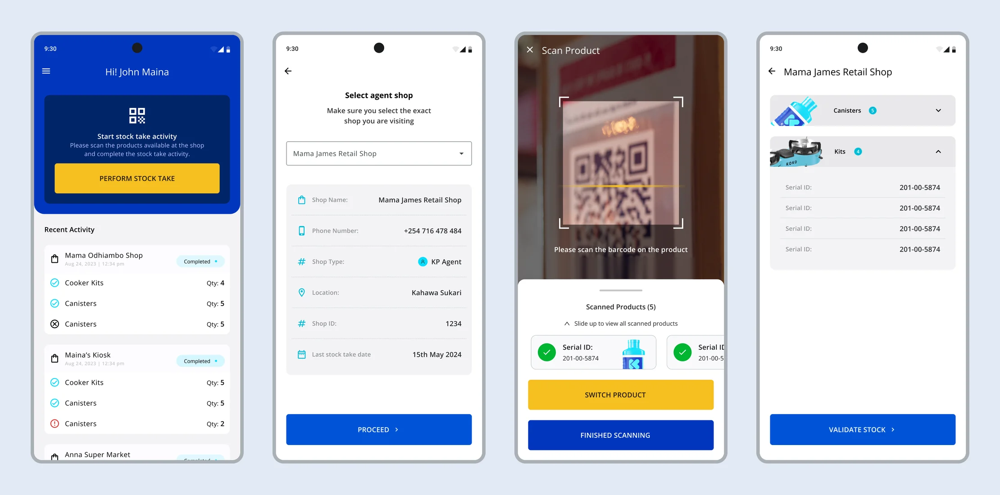
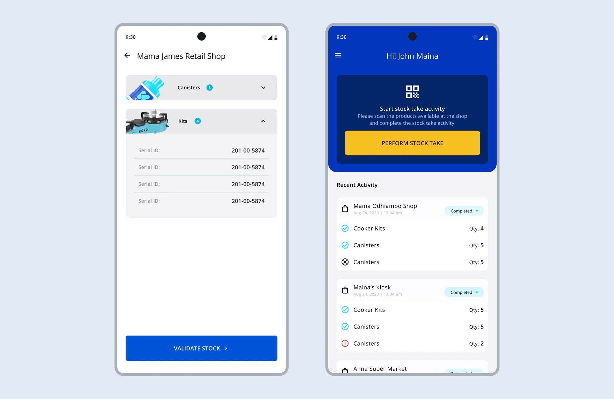
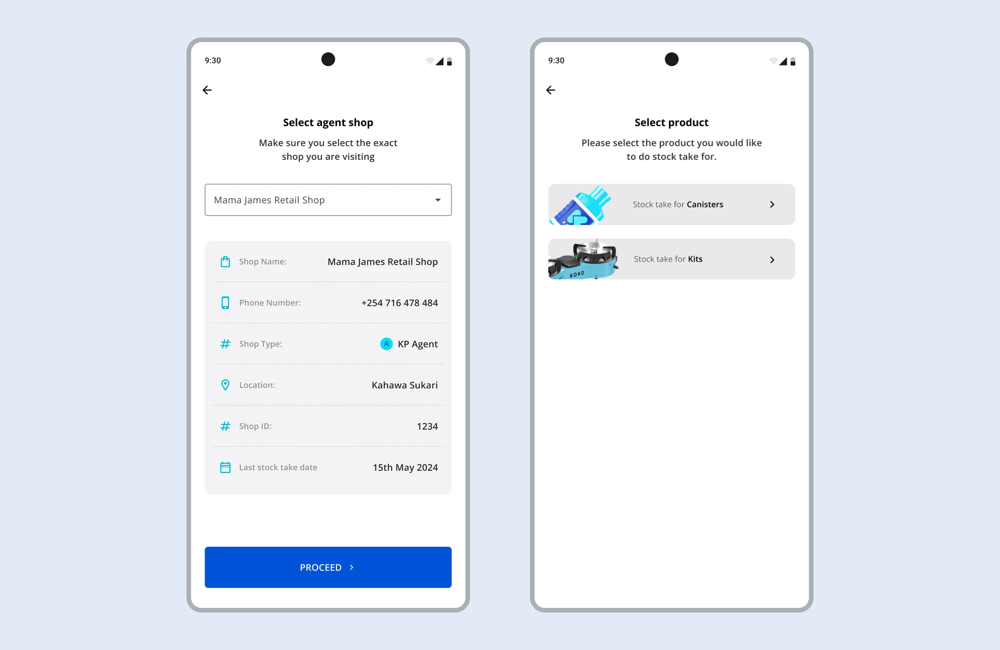
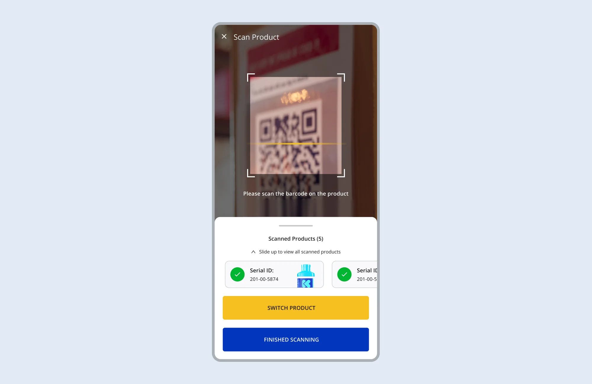

Stock Take App
When counts can't be checked at the shop, missing stock turns into disputes.

When counts can't be checked at the shop, missing stock turns into disputes.

KOKO's agent shops held cookers and fuel canisters that still belonged to KOKO until they were sold. The system regularly showed more stock than the shops actually held, so stock was going missing and nobody could pin down where.
Field teams already had a stock take app, but it worked against them. They struggled to find the right shop in a list of 1,500+, and often arrived knowing little about it: who ran it, how to reach them, when it was last counted. Stock was scanned only for what was found, and reconciliation happened later, away from the shop. In the worst cases, items had to be carried out of the shop for the scanners to read them, which disrupted the agent's business in the middle of trading.
When items turned up missing after the fact, it became a dispute between shop owners and the distribution team. Unsold stock that disappeared was a direct loss for KOKO.
A count that only records what's present can't show what's absent.
The job was to make the gap between assigned and actual stock visible while the field team was still standing in the shop, without disrupting the shop to get there.
I visited agent shops and warehouses to watch counts happen. Two things shaped the design. Stock was often kept in dark storerooms or poorly lit shops, where scanning failed. And the infrared scanners weren't always reliable or available, so a count depended on hardware that might not cooperate.
Show expected stock, not just scanned stock. The app showed what each shop should hold against what was scanned. Missing items surfaced at the shop, in front of the shop owner, rather than in a reconciliation days later.

Find the right shop fast, and give context before the count. The shop list was filtered by the field team member's current location, so they chose from a few nearby shops instead of scrolling through 1,500+. Before starting, they saw the shop's details: agent phone number, shop type, location, shop ID and the last stock take date. It confirmed they were counting the right shop, and gave them what they needed to open the conversation with the agent before scanning anything.

Scan stock where it sits. Field teams could switch between the infrared scanner and the phone camera, and turn on the phone's flashlight from the scan screen. Stock no longer had to leave the storeroom to be counted.

Design for the device, not the mock-up. The app ran on low-end Android phones with poor screen legibility. I cut on-screen content hard, sized text for field conditions, and gave even small actions clear touch targets.
Always show where a count stands. Counts worked offline, and the field team saw their status when connectivity dropped or a reconciliation was needed.
The app went through many reviews with operations and engineering, and the core decisions held because each traced back to what we saw in the field. It shipped in February 2025, after I left KOKO.
I left before usage data came in. The two numbers I would have tracked are count completion time and the rate of disputed discrepancies, which show whether field data had become trustworthy.
An internal tool had the right data but the wrong structure. I redesigned it around how operations teams actually work.
View case study 2023Designing a self-checkout product sellers would trust enough to collect payments through — then watching it get shelved before launch.
View case study 2022Introducing bank transfers as a payment method for Nigerian merchants who didn't trust card payments.
View case study